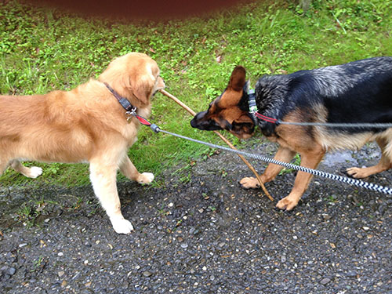

me and my life
My family. They bring action to my life and keep my emotions running! I have a husband - we're not married, but together over thirty years, so I see him as my husband. We have a 29 year old daugther together. She lives with her boyfriend. But when she needs somebody, we're always the ancor and she's ours.
Our dogs. They keep me sain and - almost - fit. Mailo, our Golden Retriever, is fourteen years old, and he's getting old and slow. He doesn't like to be alone anymore and begins to bark after a while. Our other dog is a 9 years old German Sheppard named Kira. At home she's like a toy - you can do about anything with her, she's always happy and shows it. Outside she's the fierce gard-dog and barks at all the other dogs.
I wish that the next several years will be better - we had a few hard knocks the past ten years. I hope that my over ninty year old parents, living at a retired home since this February, will still living a long time. And - like probably anybody - I wish that this damn pandemia finally finds its end and doesn't keep on splitting people apart because of their opposite opinions!
I have a lot of hobbies. Some of them are:
At the beginning of my FEWD Techdegree three years ago, I felt inapt of everything having to do with coding. This absolutely awesome slack community helped me out of it, and I began actively participating a lot. This was the best decision, asking for help there and helping others in turn helped me get better and more sure of myself.
Not to forget: I gained friends from all over the world!
My advice: Be active in the techdegree slack channels and do a lot of peer reviews - you won't regret that experience!